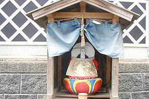

化粧地蔵ツアー３/京都府大江町、加悦町、野田川町
化粧地蔵ツアー2日目は宮津の南側の内陸部に行ってみる。
自分でいうのもナンだが、段々化粧地蔵を見つけるのが上手くなってきた。もはや私の事を化粧地蔵ハンターと呼んでも良いよ。
ポイントとしては道の合流地点や橋のたもとといった地理的にアクセントのあるところが多い。
最初はイメージとして田んぼのあぜ道にぽつんと立っているようなモノを想像していたのだが、どうやら集落の中にある程度固まって存在しているケースが多いようである。
従ってある程度の規模で、古い歴史を持つ集落に化粧地蔵はあるようだ。
で、大江町。
大江町の内宮、二俣といった集落は幹線道路と平行した旧道にあり、その古い町並みはまるで映画の中のワンシーンを観ているかのような美しさだった。
 内宮付近の化粧地蔵。この辺りも大人が描いているようだ。
二俣付近。延々と続く古い町並みに化粧地蔵がビビッドなアクセントを添えている。珍しく露天タイプ。色落ちとか大丈夫なんでしょうか。
内宮付近の化粧地蔵。この辺りも大人が描いているようだ。
二俣付近。延々と続く古い町並みに化粧地蔵がビビッドなアクセントを添えている。珍しく露天タイプ。色落ちとか大丈夫なんでしょうか。
 背後の崖と大きな石灯籠と地蔵堂が一体化した傑作。
おっ、子供の描いた化粧地蔵発見。ハチャメチャな塗り方が見ていて楽しい。
大江駅付近で。これは中央のメイン地蔵は大人が。左右のサブ地蔵は子供が仕上げたコラボレーション地蔵。
やっぱり子供の描いた地蔵の方が面白みがあって私的には好み。
これまたコラボ地蔵。親子で描いたのだろうか。
左の大きいお地蔵さんのびっくりしたような表情もおかしいが、何といっても右のお地蔵さん。
君はてるてる坊主ですか？
背後の崖と大きな石灯籠と地蔵堂が一体化した傑作。
おっ、子供の描いた化粧地蔵発見。ハチャメチャな塗り方が見ていて楽しい。
大江駅付近で。これは中央のメイン地蔵は大人が。左右のサブ地蔵は子供が仕上げたコラボレーション地蔵。
やっぱり子供の描いた地蔵の方が面白みがあって私的には好み。
これまたコラボ地蔵。親子で描いたのだろうか。
左の大きいお地蔵さんのびっくりしたような表情もおかしいが、何といっても右のお地蔵さん。
君はてるてる坊主ですか？
今度は加悦町に移動。山に囲まれた小さな街だ。
加悦の中心地近くにちりめんロードと呼ばれる古い町並みがある。
ちりめん織物の工場からバッタンバッタンと機織りの音が聞こえてくる通りで化粧地蔵を発見。
全体を塗らずに目と口だけに彩色している。文字通り化粧地蔵。
それにしても細眉に青のアイシャドウですか。今風ですな。フッフッフッ・・・
町の北東部の明石地区。
いきなり傑作六地蔵の登場である。
どれもてるてる坊主のような顔でにこやかでイイじゃないですか。
得に石碑にまで色を塗っているところが素晴らしい。
恐らくお地蔵さんに色を塗っていて段々化粧魂が高ぶってきて「ついでだ〜！塗っちゃえ、塗っちゃえ〜！」的なノリで塗ってしまったのだろう。
で、ついでに台座も、さらについでにイラストまでも追加する羽目に。
台座のイラストは野菜や果物。左からスイカ、リンゴ、バナナ、キュウリ、ナス、スイカ。お供物のつもりなんでしょうか。
嗚呼、素晴らしきかな、この蛇足根性。
その先の三叉路にお堂を見つけた。
おおおお、大傑作発見！
7体の地蔵がそれぞれ好き勝手に描かれている。
全体のバランスとか全く考えない色使い。素晴らしすぎる。いかにも野放図な子供が描き放題描いた感じだ。
ちなみに日産とあるのは単なる地名で「ニッサンの車が買えますように」とか子供がお願いしているわけじゃあないよ。
加悦の化粧地蔵は石灰を下塗りしてから色を塗っていくのが特徴だ。
従って雨にぬれたら流れ落ちてしまう。色を塗って数カ月もすればかなり色は落ちると思う。
でも、また次の夏にはまた綺麗に彩色されるわけだ。
お堂の床面にしみ込んだ石灰が化粧地蔵の歴史を感じさせてくれる。
加悦をうろついていたら何時の間にか野田川町に入っていた。
こちらも子供の作品が多いようだ。
一本裏手に入るとここにもたくさんの化粧地蔵が迎えてくれる。
どこも水や花が供えられており地元の人達がよく面倒をみているのが印象的だった。
毎年色を塗り替える作業自体も大変な労力だが、それ以上に毎日水を取り替え線香を手向ける事を考えるとホント頭が下がる思いだ。

名残惜しいがそろそろタイムアップだ。
出会った化粧地蔵は100近く。我ながら良く見てまわったものだ。
また、何年かしたら訪れたいものである。その時はどんな地蔵に変身しているのか、楽しみだ。
化粧地蔵外伝（おまけ）
最初に述べた通り、化粧地蔵は毎年奇麗に洗われてから、子供達が記憶を頼りにまた色を塗っていく。
従って劇的に変わってしまうという事はないが毎年微妙〜に変化していくのだ。
30年近く前に出版された写真集「化粧地蔵」に掲載されていた地蔵達のいくつかに出会ったが、約30回ほど塗り直されたであろう化粧地蔵はどのように変身していったのか、チョット比べてみようと思うんですけど、いいですか。
（左が「化粧地蔵」より。右は今回撮った写真。）
ケース１；小浜市西津
約30年前にはまぶただったところが思いっきり黒塗り。鼻は無くなり、口は数十倍（当社比）。
これじゃあ、骸骨ですよ。
 →
→ 
ケース
2； 小浜市西津
→  おおお、貴方は30年前からアバンギャルド地蔵だったのですね。
表情はデフォルメされているが、下の葉っぱは健在。こういうところって代々子供達が塗りつぶさないで真面目に塗っているんですねえ。
左写真左下のちょっと怒ってるお地蔵さんも美白効果で御機嫌の御様子。
おおお、貴方は30年前からアバンギャルド地蔵だったのですね。
表情はデフォルメされているが、下の葉っぱは健在。こういうところって代々子供達が塗りつぶさないで真面目に塗っているんですねえ。
左写真左下のちょっと怒ってるお地蔵さんも美白効果で御機嫌の御様子。
ケース
３； 加悦町明石
→
てるてる坊主路線に特に大きな変更はないが、台座のフルーツが変わっている。
昔は右端がナスだったが今はスイカ。その左は昔がトマトか？で、今はナス。ま、どうでもいいんですけど。
地蔵自体の立ち位置が変わっているのは恐らくお堂が木造からブロック造に変わっているのでその際、移動したものと思われる。
それにしても毎年様々な子供が色を塗っていくというのは微笑ましいと同時に驚くべき作業だ。
ややもすればこんな事やってらんねーとか言われそうなものだが、このようなすばらしい行事が廃れず地道に続けられていく事で子供達が「伝統」というものは自分達で創っていくものなのだ、という事を身を持って体験出来ればこんな貴重な財産はないだろう。
是非とも30世紀まで残してもらいたいものである。
おしまい
化粧地蔵ツアートップに戻る
珍寺大道場 HOME